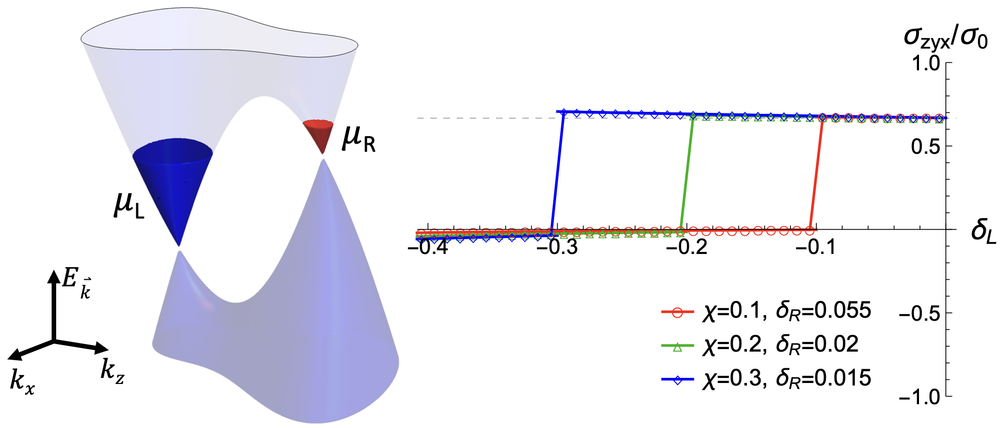

Time reversal invariant topological phases
It was shown that TRI topological phases in d dimensions can co-exist, response theory persists,
even in the ultra-thin size limit with topologically protected boundary modes of lower dimensions. We also introdued TRI Skyrmion phases characterized
by a Z2 index distinct from the typical parity with robust signatures in the boundary and in the reduced entanglement spectrum.

Transport properties of topological matter
We studied transport properties of Weyl Semimetals, where we found quantized non linear electrochemical response.
For nodal line semimetals we found anomalous transport coming from the parity anomaly at zero and finite temperature.